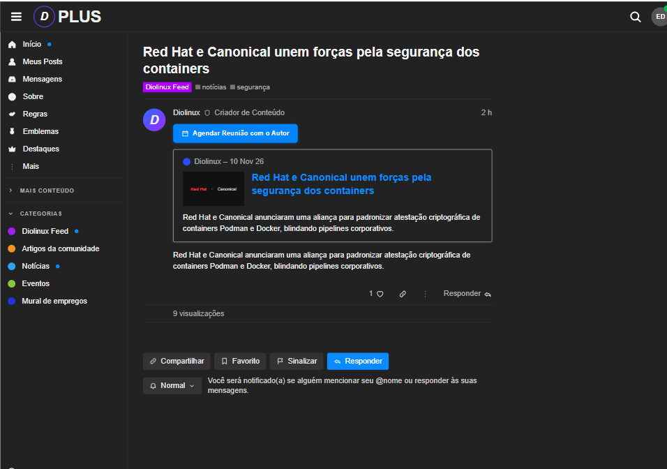
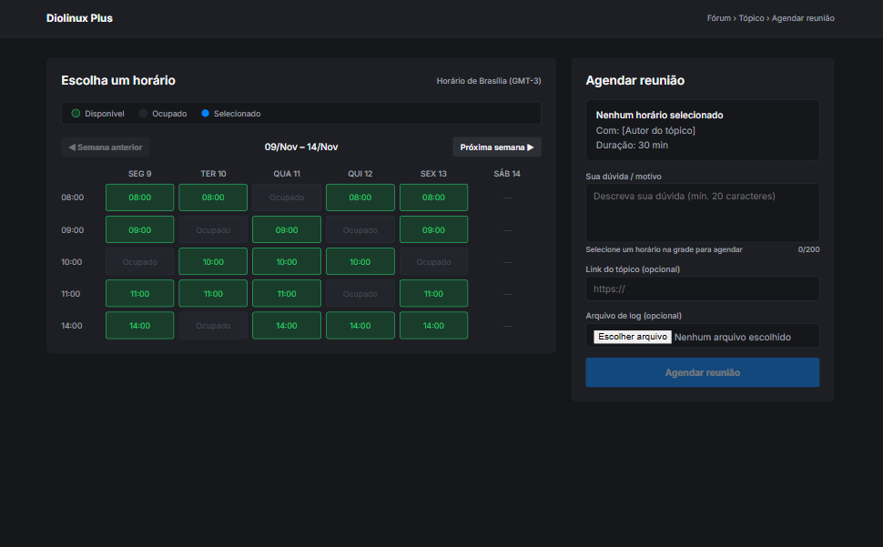
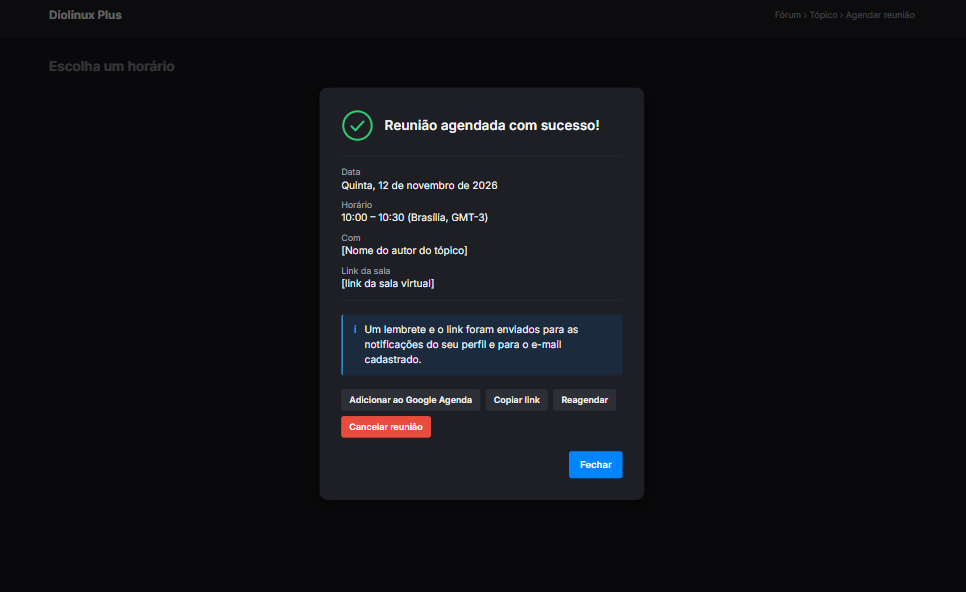
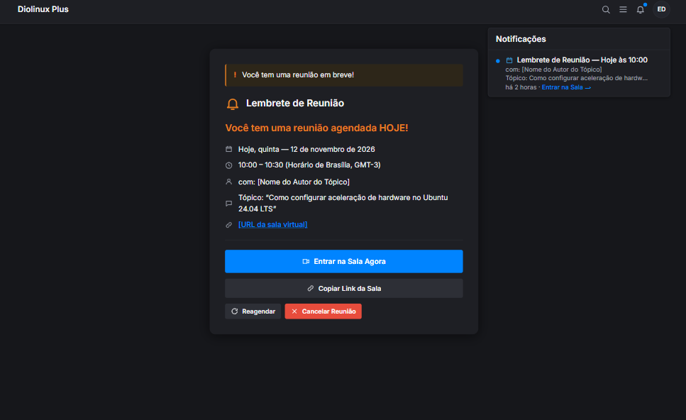

Protótipo de Alta Fidelidade — Tarefa 3 (Agendamento de Horários)
Tabela de Contribuição e Declaração Ética de IA Generativa
A Tabela 1 apresenta a matriz de governança, responsabilidade autoral e declaração ética de uso de inteligência artificial generativa na concepção e especificação técnica do protótipo de alta fidelidade da Tarefa 3.
Tabela 1 — Matriz de Contribuição e Uso de IA Generativa da Tarefa 3
| Integrante | Atribuição no Artefato | Data | Horário | Ferramenta de IA Utilizada | Propósito do Uso de IA |
|---|---|---|---|---|---|
| Edvaldo Soares Brasileiro Filho | Autor Principal / Designer: Concepção e estruturação do protótipo de alta fidelidade no Claude Design (Anthropic) com assistência do Claude, aplicação dos tokens do Guia de Estilo em Dark Mode, resolução das diretrizes herdadas do protótipo de papel (PROB-PP3-01 a 05), especificação das 4 telas canônicas e redação técnica. | 14/11/2026 | 14:00 - 18:30 | Claude Design (Anthropic) e Claude (LLM) | Geração computacional dos componentes de interface no Claude Design e auxílio na estruturação sintática do documento Markdown. |
| Vinicius Silva Araruna | Revisor por Par: Auditoria de conformidade com a lista de verificação da técnica, conferência de hiperlinks e validação do fluxo interativo no Claude Design. | 14/11/2026 | 19:00 - 19:35 | — | Revisão humana por pares e checagem de consistência visual. |
| Gustavo Antonio Rodrigues e Silva | Revisor por Par: Conferência de consistência metodológica frente ao Plano de Ensino da disciplina e checagem dos tokens do Guia de Estilo. | 14/11/2026 | 19:40 - 20:15 | — | Revisão humana por pares e auditoria cruzada. |
Fonte: Elaborada por Edvaldo Soares Brasileiro Filho, Gustavo Antonio Rodrigues e Silva e Vinicius Silva Araruna, 2026.
1. Introdução e Enquadramento no Nível 3 de Deborah Mayhew (1999)
Autor do Item Teórico: Edvaldo Soares Brasileiro Filho
No Ciclo de Vida da Engenharia de Usabilidade de Deborah Mayhew (1999), o Nível 3 (Design Detalhado e Prototipação de Alta Fidelidade) constitui o estágio em que as diretrizes ergonômicas validadas nos níveis anteriores se materializam em uma interface computacional completa (pixel-perfect), refletindo com exatidão a identidade visual, as microinterações e o comportamento esperado no sistema final.
Para a Tarefa 3 (CF03) — Agendamento de Horários com Autores de Tópicos (Mentorias e Dúvidas Técnicas) no Fórum Diolinux Plus, o protótipo de alta fidelidade foi desenvolvido no ambiente Claude Design (Anthropic) com assistência direta do modelo de inteligência artificial Claude, aplicando de forma estrita o Guia de Estilo e a atmosfera da plataforma Discourse em modo noturno (Dark Mode).
Conforme estabelecido por Barbosa e Silva (2021, p. 252–255) e Rubin e Chisnell (2008), a transição do protótipo de papel para a alta fidelidade computacional assegura três avanços metodológicos primordiais:
- Extinção do "Computador Humano": A alternância mecânica de cartões e pranchas físicas operada por um membro da equipe no Nível 2 (Snyder, 2003) é inteiramente substituída pela autonomia interativa do software. O protótipo digital processa com latência nula os cliques em botões, seleção de horários na grade, exibição de modais sobrepostos e transições de tela;
- Fidelidade Sensorial e Ergonômica: Os componentes utilizam a escala tipográfica oficial (
IntereJetBrains Mono), contraste de cores validado pela WCAG 2.1 e alinhamento em grid modular de 8px; - Mensuração Temporal e Comportamental Confiável: Viabiliza cronometrar com precisão a execução das tarefas por participantes voluntários, permitindo identificar hesitações motoras e cognitivas reais antes da implementação em código de produção.
2. Design System e Tokens Aplicados no Protótipo da Tarefa 3
O protótipo de alta fidelidade da Tarefa 3 incorpora os tokens definidos no Guia de Estilo do projeto, adaptados para o fluxo de agendamento de mentorias. A Tabela 2 sintetiza os principais tokens aplicados.
Tabela 2 — Tokens Visuais e Cromáticos Aplicados no Protótipo de Alta Fidelidade (Tarefa 3)
| Categoria do Token | Token Claude Design / CSS | Código Hexadecimal | Finalidade no Protótipo da Tarefa 3 | Nível de Contraste (WCAG 2.1) |
|---|---|---|---|---|
| Superfície Base | --surface-bg-base |
#16171B |
Fundo principal da página do tópico e da grade | Base neutra escura |
| Superfície Card | --surface-bg-card |
#1E1F24 |
Fundo do cabeçalho, cards, modais e containers | Superfície de elevação |
| Destaque Primário | --accent-primary |
#0084FF |
Botão "Agendar Reunião", slots selecionados e links | 5.1:1 sobre #1E1F24 (Nível AA) |
| Hover Primário | --accent-hover |
#006ED4 |
Estado hover de botões primários e slots | Transição interativa |
| Texto Principal | --text-high |
#F5F6F8 |
Títulos, cabeçalhos do post e textos em destaque | 13.8:1 sobre #1E1F24 (Nível AAA) |
| Texto Muted | --text-muted |
#A0A5B1 |
Legendas, timestamps, metadados e fuso horário | 5.8:1 sobre #1E1F24 (Nível AA) |
| Slot Disponível (BG) | --schedule-available-bg |
#1A3D2B |
Fundo suave de horários livres para reserva | Distinção semântica positiva |
| Slot Disponível (Border) | --schedule-available-border |
#2ECC71 |
Borda verde destacando disponibilidade | Feedback visual imediato |
| Slot Ocupado (BG) | --schedule-booked-bg |
#23252C |
Horários previamente reservados (desabilitados) | Estado neutro desabilitado |
| Slot Ocupado (Text) | --schedule-booked-text |
#4A4D57 |
Rótulo de horário reservado com baixo contraste | Inibição de affordance |
| Bordas e Divisores | --border-default |
#2D2F36 |
Contornos de formulários, inputs e separadores | AA para componentes de UI |
Fonte: Elaborada por Edvaldo Soares Brasileiro Filho, 2026.
3. Rastreabilidade Metodológica: Diretrizes de Reprojeto do Nível 2
Conforme registrado no Relato dos Resultados do Protótipo de Papel, a avaliação formativa com usuários voluntários no Nível 2 apontou cinco oportunidades de aprimoramento ergonômico (PROB-PP3-01 a PROB-PP3-05).
A Tabela 3 documenta como cada uma dessas diretrizes foi convertida em solução interativa de alta fidelidade no Claude Design.
Tabela 3 — Rastreabilidade entre os Problemas do Papel e as Soluções de Alta Fidelidade
| ID no Papel | Apontamento no Protótipo de Papel (Nível 2) | Severidade (Nielsen) | Solução Implementada no Protótipo de Alta Fidelidade (Claude Design) | Componente Afetado |
|---|---|---|---|---|
PROB-PP3-01 |
Falta de identificação clara do fuso horário na grade semanal, gerando dúvida sobre horários de atendimento (P1). | 1 (Cosmético) | Inserção permanente de rótulo explícito no cabeçalho superior esquerdo da grade: "Horário de Brasília (GMT-3)". | Cabeçalho da Grade (T3_F02) |
PROB-PP3-02 |
Ausência de legenda gráfica permanente diferenciando horários livres e ocupados (P2). | 2 (Menor) | Adição de barra de legenda fixa no topo da grade: 🟢 Disponível, ⬜ Reservado e 🔵 Selecionado, visível em tempo integral. | Barra de Legenda (T3_F02) |
PROB-PP3-03 |
Falta de campo para anexar arquivos de log ou prints de erro e ausência de limite sugerido no formulário (P3). | 2 (Menor) | Campo de texto longo com contador visível de até 200 caracteres e campo opcional para anexar link de tópico ou arquivo de log. | Formulário de Motivo (T3_F03) |
PROB-PP3-04 |
Incerteza do participante quanto ao canal de recebimento do link da sala e lembretes da reunião (P1, P2). | 2 (Menor) | Mensagem informativa em destaque no modal de confirmação: "Um lembrete e o link de acesso foram enviados para as notificações do seu perfil e e-mail cadastrado". | Confirmação e Instruções (T3_F04) |
PROB-PP3-05 |
Desejo de opções imediatas para adicionar a reunião ao calendário e ações de reagendamento/cancelamento (P3). | 2 (Menor) | Botões integrados "Adicionar ao Google Agenda", "Copiar Link", "Reagendar Horário" e "Cancelar Reunião". | Confirmação e Gestão (T3_F04) |
Fonte: Elaborada por Edvaldo Soares Brasileiro Filho, 2026.
4. Mapeamento Estrutural das 4 Telas do Protótipo
O protótipo de alta fidelidade da Tarefa 3 estrutura-se em 4 telas canônicas integradas, desenhadas no Claude Design, articulando de ponta a ponta a jornada de agendamento:
4.1 Tela 1: Página do Tópico com Botão de Agendamento (T3_F01)
Esta prancha representa a página oficial de um tópico de suporte no Fórum Diolinux Plus. O cabeçalho global do fórum (com busca, sino de notificações e avatar) é reproduzido com precisão. Ao final da resposta técnica do autor especialista, é inserido o ponto de entrada de agendamento: o botão primário destacado "📅 Agendar Reunião com o Autor".

Figura 1 — Protótipo de Alta Fidelidade no Claude Design: Página do tópico com o botão destacado de agendamento com o autor especialista (T3_F01).
Fonte: Elaborada por Edvaldo Soares Brasileiro Filho, 2026.
4.2 Tela 2: Grade Semanal de Horários Disponíveis (T3_F02)
Ao clicar no botão de agendamento, abre-se a interface de calendário semanal em colunas diárias (Segunda a Sábado). A tela contempla o seletor de semanas ("◀ Semana Anterior / Próxima Semana ▶"), a sinalização explícita de fuso horário (Horário de Brasília, GMT-3), a legenda visual permanente e os blocos de horário com estados visuais claros para slots livres, ocupados e selecionados.

Figura 2 — Protótipo de Alta Fidelidade no Claude Design: Grade semanal de horários com legenda visual, fuso de Brasília e slots selecionáveis (T3_F02).
Fonte: Elaborada por Edvaldo Soares Brasileiro Filho, 2026.
4.3 Tela 3: Confirmação do Agendamento (T3_F03)
Tela de confirmação imediata exibida após a seleção do horário na grade. Apresenta o feedback com ícone de sucesso em verde (#2ECC71), o resumo completo dos dados da mentoria (mentor especialista, data, horário e fuso), o link direto para a sala virtual, aviso sobre o envio do link por e-mail e notificações internas, botões rápidos de integração ("Adicionar ao Google Agenda" e "Copiar Link da Sala"), além dos botões secundários para reagendar ou cancelar a reunião caso necessário.

Figura 3 — Protótipo de Alta Fidelidade no Claude Design: Tela de confirmação com resumo, link da sala, aviso de confirmação e botões de integração de calendário (T3_F03).
Fonte: Elaborada por Edvaldo Soares Brasileiro Filho, 2026.
4.4 Tela 4: Lembrete da Reunião no Dia (T3_F04)
Simulação da experiência do usuário no dia marcado para a mentoria técnica. A tela documenta a notificação visual no sino do cabeçalho do Diolinux Plus com ponto de não lida e o card detalhado de lembrete contendo o aviso em destaque "Você tem uma reunião agendada HOJE!", horário em fuso de Brasília (GMT-3), botão primário "🎥 Entrar na Sala Agora" e opções rápidas de cópia de link ou reagendamento prévio.

Figura 4 — Protótipo de Alta Fidelidade no Claude Design: Notificação e tela com o lembrete da reunião no dia com acesso direto à sala virtual (T3_F04).
Fonte: Elaborada por Edvaldo Soares Brasileiro Filho, 2026.
4.5 Proposta de Reprojeto: Aumento do Tamanho de Fontes e Visibilidade (T3_F05)
Em resposta ao feedback colhido com o Participante 3 (P3) durante as sessões empíricas de avaliação de alta fidelidade — que sugeriu aumentar o tamanho das fontes e legendas para aprimorar a legibilidade e o conforto visual —, foi elaborada uma variação ergonômica ajustando o corpo tipográfico das legendas secundárias de 13px para 15px e dos rótulos de slots de 12px para 14px, aumentando a área de clique para 48px.
Nota: Captura ilustrativa da proposta de reprojeto (
T3_F05) em atualização pelo autor.
5. Lista de Verificação da Técnica (Protótipo de Alta Fidelidade)
A Tabela 4 sintetiza a autoavaliação da conformidade metodológica do artefato de prototipação de alta fidelidade da Tarefa 3.
Tabela 4 — Lista de Verificação: Protótipo de Alta Fidelidade (Tarefa 3)
| Nº | Critério Normativo Avaliado | Fonte de Referência | Status | Evidência no Documento |
|---|---|---|---|---|
| 01 | O protótipo se enquadra conceitualmente no Nível 3 de Mayhew? | Mayhew (1999); Barbosa & Silva (2021) | ✅ Sim | Seção 1 estabelece os diferenciais do Nível 3 e a extinção do Computador Humano. |
| 02 | Há especificação detalhada dos tokens cromáticos e tipográficos? | Guia de Estilo (Etapa 3); WCAG 2.1 | ✅ Sim | A Tabela 2 discrimina tokens de superfície, destaque, textos e slots com razões WCAG. |
| 03 | O artefato apresenta rastreabilidade com os problemas do Nível 2? | Mayhew (1999) | ✅ Sim | A Tabela 3 correlaciona PROB-PP3-01 a 05 com as soluções no Claude Design. |
| 04 | Há especificação das 4 telas canônicas do fluxo da Tarefa 3 com imagens? | Snyder (2003); Rubin & Chisnell (2008) | ✅ Sim | A Seção 4 detalha as 4 telas canônicas (T3_F01 a T3_F04) com imagens ilustrativas. |
| 05 | O ponto de entrada no tópico original do fórum foi mantido fielmente? | Discourse UI; Sales (2026) | ✅ Sim | A Subseção 4.1 (T3_F01) descreve o layout nativo do Diolinux Plus com o novo botão. |
| 06 | A ferramenta de desenvolvimento está explicitada conforme a execução real? | Padrão FGA/UnB | ✅ Sim | Documentado como desenvolvido no Claude Design com assistência do Claude. |
| 07 | O artefato prevê o endereçamento dos apontamentos pós-avaliação? | Nielsen (1994) | ✅ Sim | A Subseção 4.5 apresenta a proposta de reprojeto com ampliação da escala tipográfica. |
| 08 | Há declaração formal de autoria e uso ético de IA Generativa? | Código da SBC (Art. 2º); Sales (2026) | ✅ Sim | A Tabela 1 e a seção final documentam o escopo transparente de assistência da IA. |
Fonte: Elaborada por Edvaldo Soares Brasileiro Filho com base em Barbosa e Silva (2021) e Sales (2026), 2026.
6. Histórico de Versão
A Tabela 5 documenta a evolução histórica das versões deste documento.
Tabela 5 — Histórico de Versão do Documento
| Versão | Data | Descrição Detalhada da Modificação | Autor(es) | Revisor(es) |
|---|---|---|---|---|
1.0 |
14/11/2026 | Elaboração inicial da especificação técnica do Protótipo de Alta Fidelidade da Tarefa 3 (Agendamento de Horários com Autores de Tópicos), detalhando os tokens do Guia de Estilo, rastreabilidade dos problemas do protótipo de papel (PROB-PP3-01 a 05), especificação das 4 telas canônicas no Claude Design (T3_F01 a T3_F04), incorporação da proposta de reprojeto para ajuste de fontes (T3_F05) e checklist de conformidade. | Edvaldo Soares Brasileiro Filho | Vinicius Silva Araruna, Gustavo Antonio Rodrigues e Silva |
Fonte: Elaborada por Edvaldo Soares Brasileiro Filho, Gustavo Antonio Rodrigues e Silva e Vinicius Silva Araruna, 2026.
7. Referências Bibliográficas (ABNT)
- BARBOSA, Simone Diniz Junqueira; SILVA, Bruno Santana da; SILVEIRA, Milene Selbach; GASPARINI, Isabela; DARIN, Ticianne; BARBOSA, Gabriel Diniz Junqueira. Interação Humano-Computador e Experiência do Usuário. Rio de Janeiro: Autopublicação, 2021. ISBN 978-65-00-19677-1. (Capítulo 10: Prototipação; Capítulo 11: Avaliação de IHC).
- MAYHEW, Deborah J. The Usability Engineering Lifecycle: a practitioner's handbook for user interface design. San Francisco: Morgan Kaufmann Publishers, 1999.
- NIELSEN, Jakob. Usability Engineering. San Francisco: Morgan Kaufmann Publishers, 1994.
- RUBIN, Jeffrey; CHISNELL, Dana. Handbook of Usability Testing: How to Plan, Design, and Conduct Effective Tests. 2. ed. Indianapolis: Wiley Publishing, 2008.
- SALES, André Barros de. Plano de Ensino da Disciplina de Interação Humano Computador. Brasília: Universidade de Brasília, Faculdade UnB Gama (FGA), 2026.
- SNYDER, Carolyn. Paper Prototyping: The Fast and Easy Way to Design and Refine User Interfaces. San Francisco: Morgan Kaufmann Publishers, 2003.
- W3C. Web Content Accessibility Guidelines (WCAG) 2.1. World Wide Web Consortium, 2018. Disponível em: https://www.w3.org/TR/WCAG21/.
8. Agradecimentos e Declaração de Uso de IA Generativa
Em cumprimento às diretrizes éticas da Sociedade Brasileira de Computação (SBC) e às normas do Plano de Ensino da disciplina (Sales, 2026), declara-se que durante a elaboração deste artefato foram utilizados recursos de Inteligência Artificial Generativa (Claude Design da Anthropic e Claude LLM) para concepção visual dos componentes de interface e auxílio na estruturação sintática das matrizes Markdown. Todo o projeto gráfico, formulação dos fluxos e validação ergonômica foram concebidos, auditados e validados integralmente pelos autores humanos listados no Histórico de Versão.